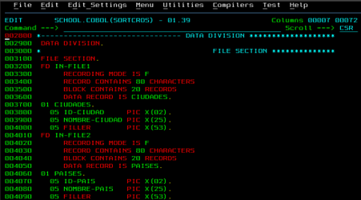

Tarea 11 - Cobol
Conjunto de caracteres
"Los personajes son los más bajos en la jerarquía y que no se puede dividir más. El COBOL Juego de caracteres incluye 78 caracteres que se muestran a continuación:
Hoja de codificación
El programa de origen de COBOL debe estar escrito en un formato aceptable para los compiladores. Programas COBOL se escriben en hojas codificación COBOL. Hay 80 caracteres en cada una de las líneas de un hoja de codificación. Posiciones de caracteres se agrupan en los siguientes cinco campos:
Paradigma
Los lenguajes como FORTRAN, COBOL o ALGOL-60 son miembros del denominado paradigma imperativo. En este paradigma, los conceptos centrales son el de estado (variable o región de memoria que puede consultarse y actualizarse) y el de instrucción (unidad de ejecución que, eventualmente, conduce a la modificación del estado).
Descargar Cobol aquí
